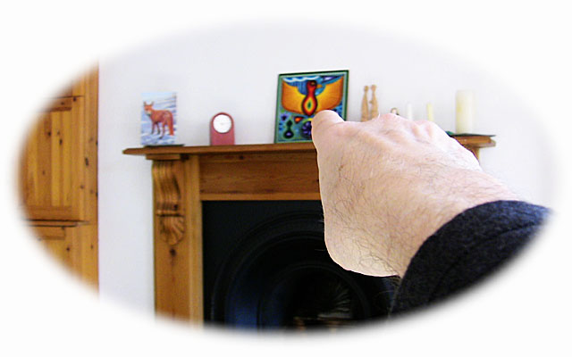
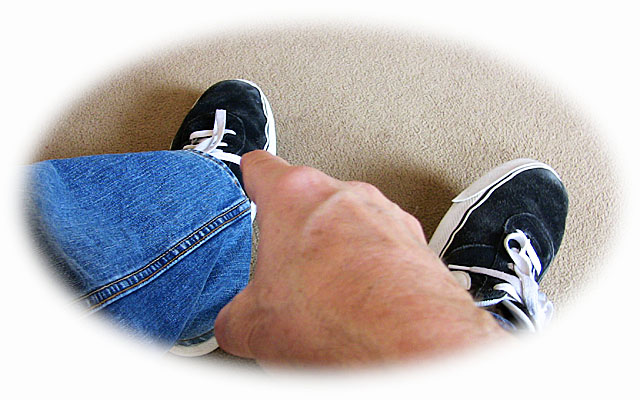
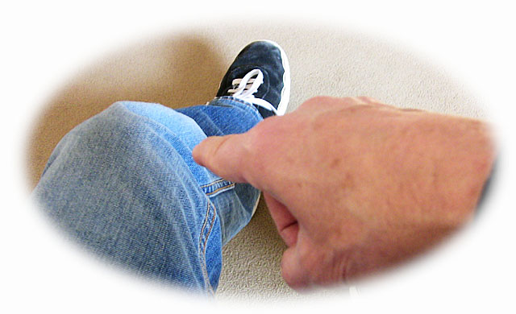
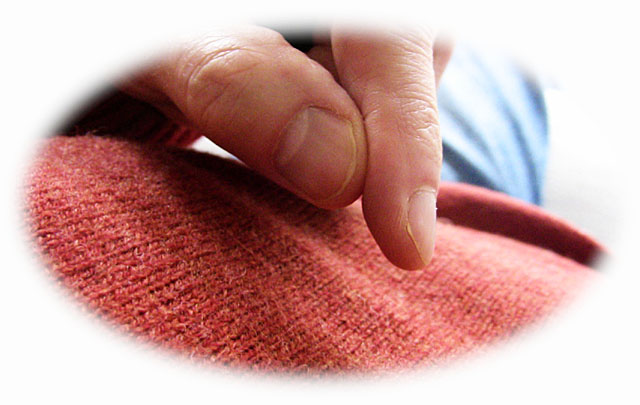
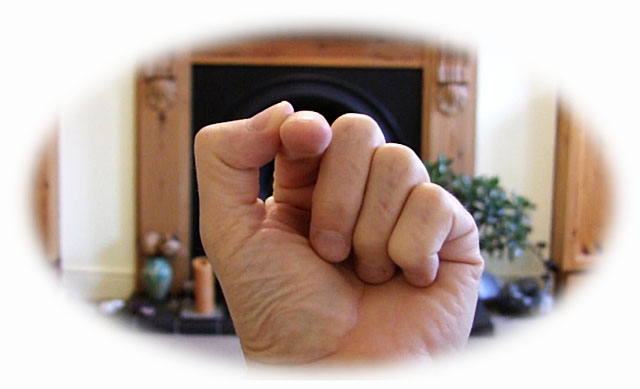

A step-by-step way of guiding your attention to the formless centre of yourself…
Point at something in front of you. You see a thing there. Notice its form and colour.
Point at your shoe. Notice its form and colour. Another thing.
Point at your knee – another thing.
Point at your torso – yet another thing.
Now point at where others see your face – the place you are looking out of. What do you see at zero distance? Do you see your face? Do you see anything at all?
I see no face here. Instead I see space, emptiness… This space is now filled with my finger, plus the rest of the room, sounds, sensations, thoughts… From my point of view I am not a limited thing – I am boundless capacity for the world.
What do you find? Are you also capacity for the world?